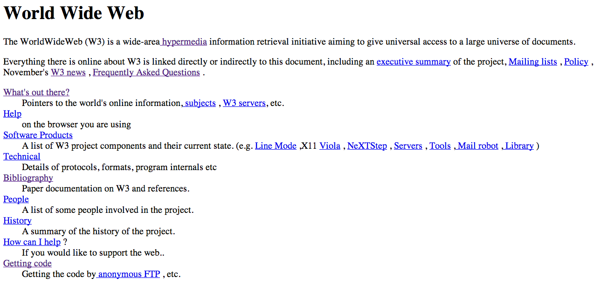
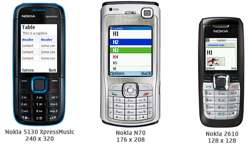

-
The Launch of Sputnik sparks technology race - 1957
The USSR launched the first artificial satellite named Sputnik into space. As a counter act, the US government creates the Advanced Research Projects Agency (ARPA). They do so in an attempt to become the world leader in science and technology, in relation with the military. (DeGroot, "Sputnik 1957", pp. 34-39)
-
The ARPA Network is born - 1969
Nine years after its formation, the ARPA hosts a study on “cooperative network of time–sharing computers.” Shortly thereafter, two computers, one from the MIT Lincoln Lab and one from the System Development Corporation (SDC), are successfully connected with a dedicated 1200bps phone line. A third computer, at ARPA, is added to form “The Experimental Network .” (Roberts, "LGR - The ARPA Network")
-
The Creation of the Internet -1983
Pioneers: Robert E. Kahn & Vint Cerf

Widely renowned as the founding fathers of the Internet, Robert E. Kahn and Vint Cerf designed the computer protocol that allowed for the internetworking of computers. Thus began a global spark of the technology age as we know it today. The pioneers became the recipients of the President's Medal of Freedom Award in 2005. (Peterson, "Setting the Protocols for an Age", pp. 32)
-
The birth of the World Wide Web - 1989
Pioneer: Tim Berners-Lee

In 1989, the World Wide Web was invented by Tim Berners-Lee, a British scientist at CERN. Although the web was initially developed to create a more effective communication system among scientists at CERN, Berners-Lee realized that this concept could be utilized throughout the world. The World Wide Web is now the most widely used space of the internet to date. ("CERN Accelerating science")
-
Hypertext Markup Langage (HTML) 1.0 - 1990

The world saw the first release of HTML in 1990, shortly after the creation of the World Wide Web. HTML was also founded by Tim Berners-Lee. The language at the time was very limiting, as it only allowed for plain text. (Guns, "Tracing the Origins of the Semantic Web", pp. 2173-2181)
-
The first website goes online - August 1991
The first website was written and published by none other than Tim Berners-Lee at http://info.cern.ch. The website, written in HTML, consists of plain text, and a few links. Shortly after, Berners-Lee went on to found the World Wide Consortium, which seeks to standardize and improve upon markup languages to create more semantically written websites. (Wolchover, "What Was the First Website Ever?")
-
Javascript is Created - 1995
Pioneer: Brendan Eich
The creation of JavaScript, also known as ECMAScript allowed for a more dynamic web, adding behavior to websites on top of exsisting HTML. Founded by Brendan Eich, JavaScript was the answer to the limitations of HTML. ("A Short History of JavaScript")
-
JavaScript is Standardized - 1996

Shortly after its creation, the web saw the standardization of JavaScript with its first revision. The goal of this revision was to update the ECMAScript specification to reflect the language as it is actually implemented in modern web browsers and to establish a foundation for the future evolutions of the language. ("A Short History of JavaScript")
-
Adobe Flash Player is Founded - 1996
The creation of Adobe Flash marked the Golden Age of web design. Through Flash, designers could incorporate animation and interactivity into their site. This allowed for the creation of splash pages, intro animations, fonts, and other interactive effects. All this is possible, that is, if users had the latest plugin installed. ("The Life, Death and Rebirth of Adobe Flash")
-
The World Wide Web goes Mobile - 1996
The AT&T PocketNet Phone was the very first internet phone. While it was never released to the general market, it did signify the beginning of a new era of technological advancement. From there, more and more mobile phones were created with the ability to access the internet. ("The first 'Internet Phone' circa 1996")
-
Cascading Style Sheets (CSS) is Created - 1997
Pioneer: Håkon Wium Lie

Invented by Håkon Wium Lie, CSS became a powerful language for styling websites. Through CSS, designers are able to perfect the presentation semantics of websites. Today, CSS continues to be a vital component of working websites, and has even been the more lightweight solution for solving styling and animation features over JavaScript and Flash. ("The History of css & Get Started with css - UnderWorld Magazines")
-
Google is Founded - September 4, 1998

Google.com was registered as a domain name in the year of 1997. Within the next year, Google was officially founded with a mission to organize the seemingly infinite amount of information on the web. Over the years, Google became a search engine giant, and has made such an influential inpact on our society. Google's success spawned the need for more semantic websites, as the consumption of information via the web grew, so was the need for companies to appear first on the search engine's result page. ("Our history in depth – Company – Google")
-
A Culture is Made: Smashing Magazine is Founded - 2006
Founder: Vitaly Friedman
With the rapid growth of web standards and the overwhelming arrival of new technologies, an online community and resource for designers and devleopers of the web was greatly needed. 2006 brought the arrival of Smashing Magazine, one of the largest and most highly valued learning community for web designers and developers. Smashing Magazine has written hundreds of thousands of articles and books to keep users up-to-date on the latest practices of the web, and has even hosted workshops around the world.
-
Web Design is Redefined - 2007

The growing use of the web via mobile devices became a challenge for designers and developers alike. To improve on the user experience on mobile devices, the definition of web design, and how we approach it, needed to change. Thus came along the use of grid systems and frameworks. These methods of web design allowed for mobile websites - smaller, more lightweight, versions of traditional desktop websites.
-
Responsive Web Design becomes a standard - 2010
A more and more devices are created with internet access, in combination with the growing digital age, designers and developers needed a more refined and efficient way of presenting content that was fluid among the varying screen sizes. Responsive Design was the answer to this call. With responsive design, websites can adapt according to the viewport or screen size of the device the user is accessing it through. This eliminated the process of creating a separate mobile site, and sped up the process for creating websites. Today, responsive design is a standard. It has become such a necessity that Google uses is as a factor for ranking their search results. ("What is Responsive Design?")
-
The Future of the Web - 2015

Today, Responsive Design remains as the standard for designing websites. However, there are a variety of trends that are in the works that may one day replace Responsive Design. CSS is reaching its maturity with preprocessors such as LESS and SASS, and even tools such as Flexbox. As technology continues to advance, so will design.